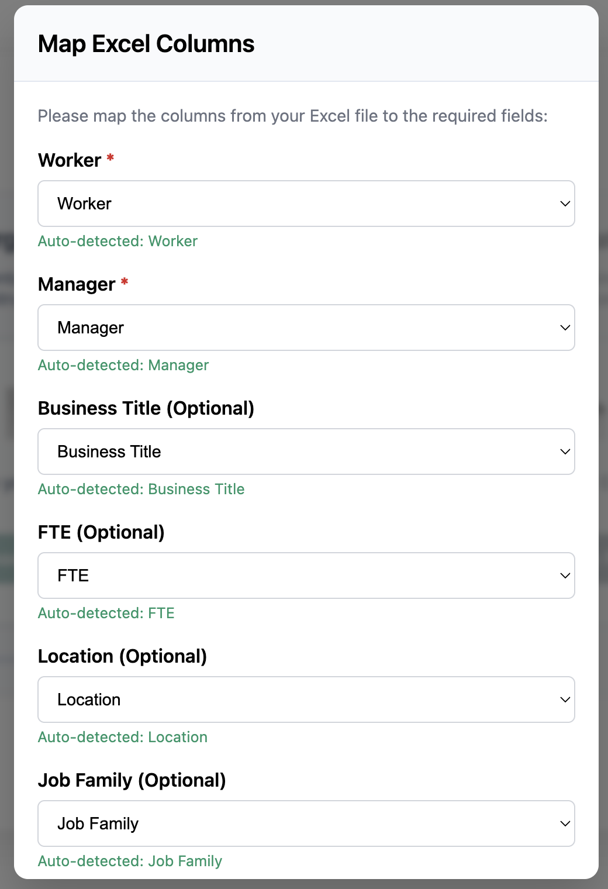
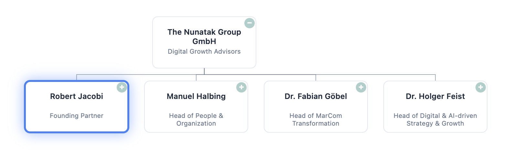
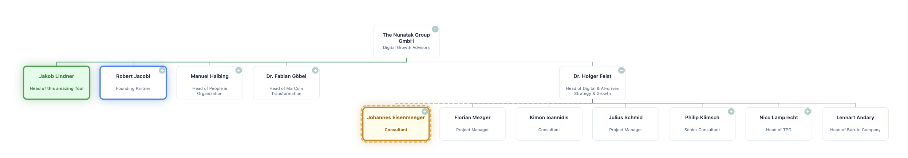

Organigram Analyzer
Visualize Your Organization Like Never Before
Transform your Excel data into interactive org charts. Compare organizational changes, analyze team structures, and gain valuable insights.
Powerful Features
Interactive Visualization
Navigate through your org structure with intuitive controls. Zoom, pan, and explore your organization with ease.
Compare Changes
Upload baseline and target org structures to visualize changes. See who moved, who's new, and track organizational evolution.
Team Statistics
Get instant insights with FTE statistics, team size analysis, and management span metrics for any node in your org chart.
Quick Search
Find any employee instantly with our powerful search functionality. Jump directly to their position in the org chart.
Save & Share
Save your org charts to access them later or share with colleagues. Track organizational changes over time.
Excel Integration
Import directly from Excel files with automatic column mapping. No special formatting required.
How It Works
Upload Your Excel File
Start with a simple Excel file containing employee names, managers, and job titles. Additional columns like FTE, location, and job family enhance your insights.
| Employee Name | Manager | Business Title |
|---|---|---|
| John Smith | CEO | |
| Sarah Johnson | John Smith | VP Engineering |
Map Your Columns
Our intelligent system automatically detects column mappings, but you can adjust them if needed. We'll validate your data to ensure it creates a proper hierarchy.
Explore Your Org Chart
Interact with your dynamic org chart. Click on nodes to see details, search for employees, and analyze team structures at any level.
Compare & Analyze Changes
Upload a second file to compare organizational changes. See who moved, who's new, and understand the impact of reorganizations.
What Our Users Say
Transform Your Organizational Planning Today
Join thousands of companies using Organigram Analyzer to visualize, plan, and communicate organizational structures.